La distance totale (à droite) et le numéro de la case sont des éléments qui sont calculés automatiquement par le logiciel. Si la saisie de la distance de gauche, le choix des petits dessins en dessous de celle-ci et le texte de la case ne pose pas de problème particulier au niveau de la définition (les boite de dialogues sont très simple), ce n'est pas le cas du dessin.
Dans la suite de ce document, nous allons voir les différents outils dont nous disposons pour définir un dessin.
Chaque dessin n'est pas une image mais un ensemble d'éléments (traits, cercles, rectangles, texte,...) vectoriels, c'est à dire qu'on peut les réduire ou les grossir presque à l'infini sans qu'ils soient déformés. Cela permet de réduire au maximum l'écart entre l'aperçu à l'écran et le résultat obtenu à l'impression.
Chaque dessin d'une case est le résultat de la superposition de cinq cartes. Les cartes sont des assistants à la réalisation de dessin. Ainsi, la carte de ci-dessous permet de dessiner un carrefour très rapidement. Il suffit de choisir son type de traits (route, route nationale, chemin ou sentier) et de le placer(autrement dit cliquer) dans le petit carré correspondant pour qu'il remplace le trait en gris. Lors de l'impression, les traits en gris ne seront pas imprimés.
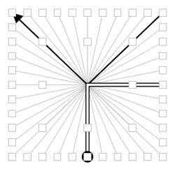
La carte d'assistance de type Carrefour
Pour chaque dessin d'une case, on dispose de cinq cartes qui seront superposées en transparence lors de l'impression. Les quatre premières cartes peuvent être du type:
Carrefour
Rond point
Grille
Vectorielle
Clipart
Cap
Montre
Arcs et plans
Texte
Borne
Mille pattes
Images Gif ou Jpeg
Lignes de texte
Ponts
Villes
La dernière carte est du type
Objets. Dans cette carte, la zone de dessin est décomposée en une grille de 10 cases par 10 cases dans lesquelles on peut placer des objets comme une maison, un hopital, ...
Lorsque plusieurs cartes sont utilisées pour réaliser le dessin, les cartes qui ne sont pas en cours d'édition sont affichées en rouge au lieu d'être en noir. A l'impression toutes les cartes seront dessinées en noir.
Carrefour
Cette carte permet de dessiner un carrefour. Les interactions possibles sont:
Click gauche dans un carré pour placer.
Click droit dans un carré pour effacer.
La carte d'assistance de type Carrefour
Rond Point
Cette carte permet de dessiner un rond point. Les interactions possibles sont:
Click gauche dans un carré pour placer.
Click droit dans un carré pour effacer.
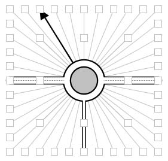
La carte d'assistance de type Rond Point
Grille
Cette carte permet de dessiner selon une grille. Les interactions possibles sont:
Click gauche sur un trait pour placer.
Click droit sur un trait pour effacer.
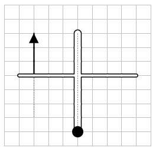
La carte d'assistance de type Grille
Vectorielle
Cette carte permet de dessiner des droites ou des courbes selon une grille. Cette carte possède plusieurs modes de fonctionnement qui sotn sélectionnable dans la palette de gauche.
En mode insertion courbe ou droite:
Enfoncement du bouton gauche pour indiquer le premier point.
Relâchement du bouton de gauche après déplacement de la souris pour indiquer le deuxième point.
En mode sélection:
Click gauche sur une extrémité pour sélectionner une droite ou une courbe.
En mode Déplacement:
Enfoncement du bouton gauche pour indiquer le point à déplacer.
Relâchement du bouton de gauche après déplacement de la souris pour indiquer la position du nouveau point.
En mode suppression:
Click gauche sur une extrémité pour supprimer une droite ou une courbe.
Le trait bleu indique la droite ou la courbe en cours d'édition.
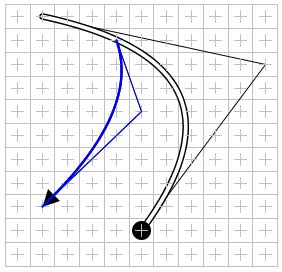
La carte d'assistance de type Vectorielle
Clipart
Cette carte permet d'afficher un clipart. Les images possibles sont:
Boussole.
Départ.
Arrivée.
Pause repas.
Pause.
C.P. (contrôle de passage).
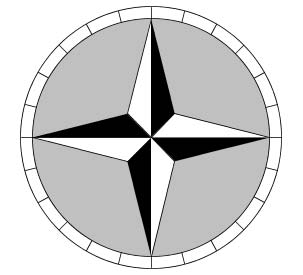
La carte d'assistance de type Clipart
Cap
Cette carte permet d'indiquer un cap à suivre. Les valeurs possibles sont comprises entre 0 et 345 avec un pas de 15 degré.
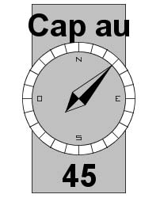
La carte d'assistance de type Cap
Montre
Cette carte permet d'indiquer une direction à suivre. Les valeurs possibles sont comprises entre 1 et 12 avec un pas de 1 heure.
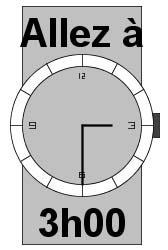
La carte d'assistance de type Montre
Texte
Cette carte permet d'écrire du texte. Les interactions possibles sont:
Click gauche sur la carte pour saisir le texte.
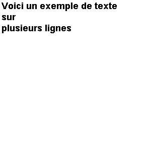
La carte d'assistance de type Texte
Arcs & Plans
Cette carte permet de positionner des arcs et des diagonales dans une grille de 10 cases par 10 cases. Les interactions possibles sont:
Click gauche dans un carré pour placer.
Click droit dans un carré pour effacer.
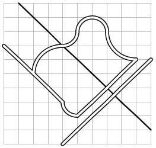
La carte d'assistance de type Arcs & Plans
Bornes
Cette carte permet d'ajouter des étiquettes pour indiquer le numéro d'une route nationale, d'une route départementale ou d'une route communale. Elle peut être utilisée pour indiquer un chemin de type GR. Les interactions possibles sont:
Click gauche dans un carré pour placer.
Click droit dans un carré pour effacer.
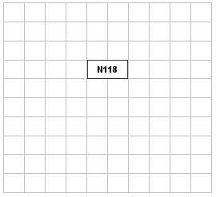
La carte d'assistance de type Bornes
Mille pattes
Cette carte permet de dessiner un mille pattes. Les interactions possibles sont:
Click gauche dans un carré pour placer.
Click droit dans un carré pour effacer.
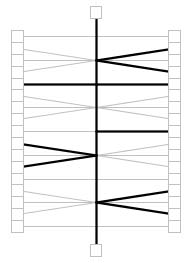
La carte d'assistance de type Mille pattes
Image
Cette carte permet d'afficher dans une case une image au format GIF ou JPEG.
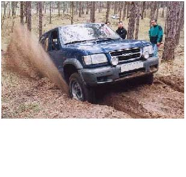
La carte d'assistance de type Image
Lignes de texte
Cette carte permet d'écrire du texte. Chaque ligne de texte à sa propre zone d'affichage. Les interactions possibles sont:
Click gauche sur l'une des zone de la carte pour saisir le texte correspondant à la zone.
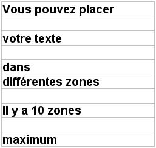
La carte d'assistance de type Lignes de texte
Ponts
Cette carte permet de placer des ponts. Les interactions possibles sont:
Click gauche pour placer un pont.
Click droit pour effacer un pont.
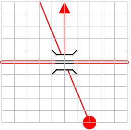
La carte d'assistance de type Ponts
Villes
Cette carte permet de placer des panneaux d'entrée ou de sortie de ville. Les interactions possibles sont:
Click gauche pour editer le nom de la ville.
Click un des bouton sur la gauche pour indiquer s'il s'agit d'une entrée ou d'une sortie.
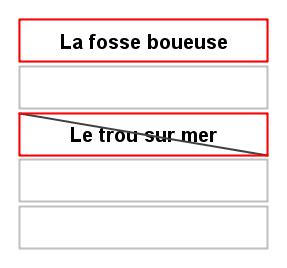
La carte d'assistance de type villes
Objets
Cette carte permet d'ajouter des objets dans une grille de 10 cases par 10 cases. Les objets disponibles sont:
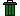 Effacer
Maison
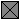 Grande maison
Croix
Chapelle
Eglise
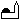 Mosquée
Hopital
Station service
Parking
Contrôle de passage
Panneau Stop
Panneau Ceder le passage
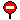 Panneau Sens interdit
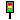 Feux de circulation
Arbre
Sapin
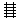 Rail Nord Sud
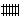 Rail Est Ouest
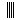 Rivière Nord sud
Rivière Est Ouest
Cercle
Rond
Barrière horizontale
Barrière verticale
Les interactions possibles sont:
Click gauche dans un carré pour placer.
Click droit dans un carré pour effacer.
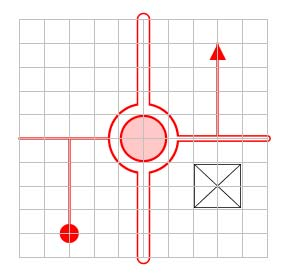
La carte d'assistance de type Objets
Les types de traits qui sont accessibles via le menu Carte ou via la palette de boutons accessible sur la gauche de la carte sont:
Sentier ou hors piste
Pour sélectionner le trait correspondant à un sentier ou hors piste.
Pour sélectionner le trait correspondant à une destination sur un sentier ou hors piste.
Pour sélectionner le trait correspondant à une destination inverse sur un sentier ou hors piste.
Pour sélectionner le trait correspondant à une origine sur un sentier ou hors piste.
Pour sélectionner le trait correspondant à une origine inverse sur un sentier ou hors piste.
Chemin
Pour sélectionner le trait correspondant à un chemin.
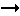 Pour sélectionner le trait correspondant à une destination sur un chemin.
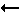 Pour sélectionner le trait correspondant à une destination inverse sur un chemin.
Pour sélectionner le trait correspondant à une origine sur un chemin.
Pour sélectionner le trait correspondant à une origine inverse sur un chemin.
Route
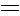 Pour sélectionner le trait correspondant à une route.
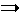 Pour sélectionner le trait correspondant à une destination sur une route.
Pour sélectionner le trait correspondant à une destination inverse sur une route.
Pour sélectionner le trait correspondant à une origine sur une route.
Pour sélectionner le trait correspondant à une origine inverse sur une route.
Route nationale
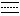 Pour sélectionner le trait correspondant à une route nationale.
Pour sélectionner le trait correspondant à une destination sur une route nationale.
Pour sélectionner le trait correspondant à une destination inverse sur une route nationale.
Pour sélectionner le trait correspondant à une origine sur une route nationale.
Pour sélectionner le trait correspondant à une origine inverse sur une route nationale.
Route avec séparateur central
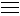 Pour sélectionner le trait correspondant à une route avec séparateur central.
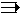 Pour sélectionner le trait correspondant à une destination sur une route avec séparateur central.
Pour sélectionner le trait correspondant à une destination inverse sur une route avec séparateur central.
Pour sélectionner le trait correspondant à une origine sur une route avec séparateur central.
Pour sélectionner le trait correspondant à une origine inverse sur une route avec séparateur central.
Autres

Pour sélectionner le trait correspondant à une voie de chemin de fer.
Pour sélectionner le trait correspondant à une rivière.